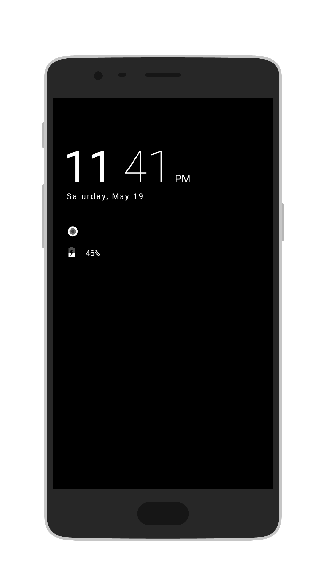

This is a modification for OxygenOS 5.0.x which makes the ones on the ambient display show in white instead of the stock red color. Alternate ambient display styles can be selected in OxygenOS 5.1.x, which isn't yet available for the OnePlus 3 and 3T.
To install, download the app from the link below and install it. The app is a Substratum theme engine module, meaning that working Substratum is a prerequisite. Once the app is installed open the Substratum manager, enable the "OTG Subs Theme" and restart your device.
Download link (1.9 MB .apk)